AWSIM Environment
Introduction
Environment is an object that contains all the elements visible on the scene along with components that affect how they are rendered.
It contains several objects aggregating static environment objects in terms of their type.
Moreover, it contains elements responsible for controlling random traffic.
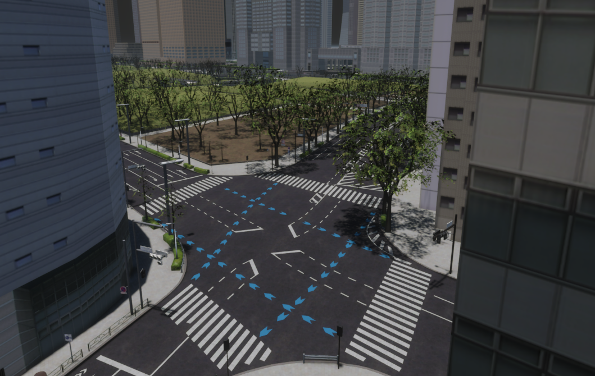
Own Environment prefab
If you would like to develop your own prefab Environment for AWSIM, we encourage you to read this tutorial.
AutowareSimulation scene
If you would like to see how Environment with random traffic works or run some tests, we encourage you to familiarize yourself with the AutowareSimulation scene described in this section.
Prefab Environment is also used to create a point cloud (*.pcd file) needed to locate the EgoVehicle in the simulated AWSIM scene.
The point cloud is created using the RGL plugin and then used in Autoware.
We encourage you to familiarize yourself with an example scene of creating a point cloud - described here.
Create PointCloud (*.pcd file)
If you would like to learn how to create a point cloud in AWSIM using Environment prefab, we encourage you to read this tutorial.
Architecture
The architecture of an Environment - with dependencies between components - is presented on the following diagram.

Prefabs
Prefabs can be found under the following path:
| Name | Description | Path |
|---|---|---|
| Nishishinjuku | Only stationary visual elements, no traffic | Assets/AWSIM/Prefabs/Environments/Nishishinjuku.prefab |
| Nishishinjuku RandomTraffic | Stationary visual elements along with random traffic | Assets/AWSIM/Prefabs/Environments/Nishishinjuku RandomTraffic.prefab |
| Nishishinjuku Traffic | Stationary visual elements along with non-random traffic | Assets/AWSIM/Prefabs/Environments/Nishishinjuku Traffic.prefab |
Environment prefab
Due to the similarity of the above prefabs, this section focuses on prefab Nishishinjuku RandomTraffic.
The exact differences between Nishishinjuku RandomTraffic and Nishishinjuku Traffic will be described in the future.
Environment name
In order to standardize the documentation, the name Environment will be used in this section as the equivalent of the prefab named Nishishinjuku RandomTraffic.
Nishishinjuku RandomTraffic prefab has the following content:
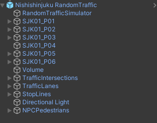
As you can see it contains:
SJK*objects - which are aggregators for visual models.RandomTrafficSimulator,TrafficIntersections,TrafficLanes,StopLines- which are responsible for random traffic ofNPCVehicles.NPCPedestrians- which is an aggregator ofNPCPedestrianprefabs added to the scene.Volume,Directional Light- which are components that affect the appearance of objects on the scene.
All of these objects are described below in this section.
Visual elements
Nishishinjuku RandomTraffic prefab contains many visual elements which are described here.
Link in the default Scene
Nishishinjuku RandomTraffic prefab is added to the Environment object - between which there is rotation about the Oy axis by 90 degrees.
This rotation is added because of the differences in coordinate alignments between the Nishishinjuku RandomTraffic prefab objects (which have been modeled as *.fbx files) and the specifics of the GridZone definition (more on this is described here).
Object Environment is added to AutowareSimulation which is added directly to the main parent of the scene - there are no transformations between these objects.
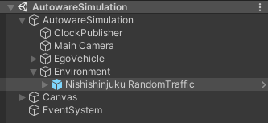
Components
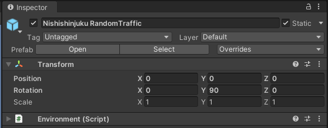
Nishishinjuku RandomTraffic (Environment) prefab contains only one component:
- Environment (script) - which is important for communicating with Autoware and loading elements from Lanelet2. Because it allows to define the location of the environment in relation to the world.
Layers
In order to enable the movement of vehicles around the environment, additional layers have been added to the project: Ground and Vehicle.
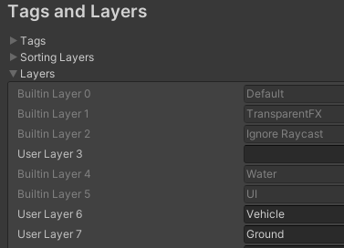
All objects that are acting as a ground for NPCVehicles and EgoVehicle to move on have been added to Ground layer - they cannot pass through each other and should collide for the physics engine to calculate their interactions.
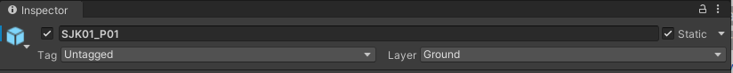
For this purpose, NPCVehicles and EgoVehicle have been added to the Vehicle layer.
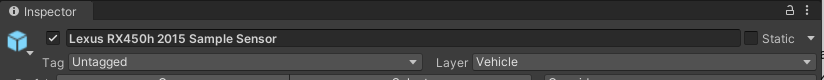
In the project physics settings, it is ensured that collisions between objects in the Vehicle layer are disabled (this applies to EgoVehicle and NPCVehicles - they do not collide with each other):
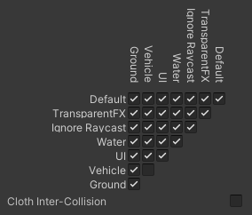
Traffic Components
Due to the specificity of the use of RandomTrafficSimulator, TrafficIntersections, TrafficLanes, StopLines objects, they have been described in a separate section Traffic Components - where all the elements necessary in simulated random traffic are presented.
Visual Elements (SJK)
The visuals elements have been loaded and organized using the *.fbx files which can be found under the path:
Assets/AWSIM/Externals/Nishishinjuku/Nishishinjuku_optimized/Models/*
Environment prefab contains several objects aggregating stationary visual elements of space by their category:
-
SJK01_P01- contains all objects constituting the ground of the environment, these are roads and green fields - each of them contains aMeshCollidersand layer set asGroundto ensure collisions withNPCVehiclesandEgoVehicle.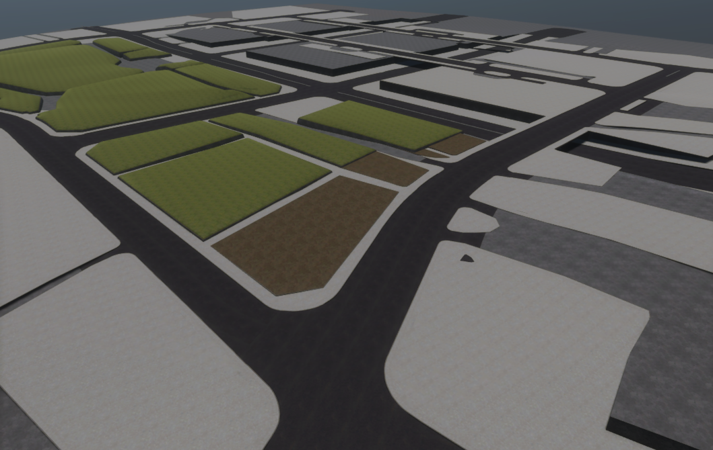
-
SJK01_P02- contains all road surface markings on roads added to the environment. The objects of this group do not haveMeshCollidersand their layer isDefault.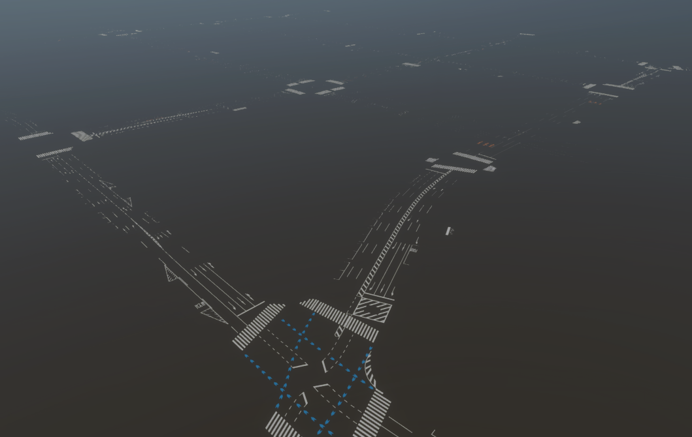
-
SJK01_P03- contains all the vertical poles added to the environment, such as lamp posts, road signs and traffic light poles. OnlyTrafficLightpoles andPedestrianLightpoles haveMeshCollideradded. The layer for all objects isDefault.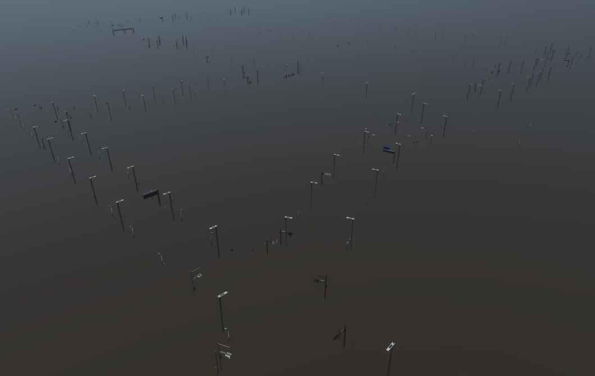
-
SJK01_P04- contains all barriers added to the environment, such as barriers by sidewalks. The objects of this group do not haveMeshCollidersand their layer isDefault.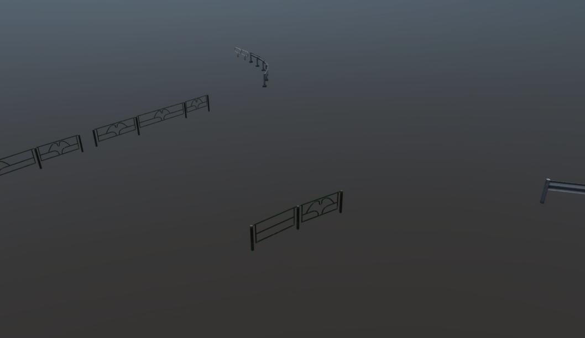
-
SJK01_P05- contains all greenery added to the environment, such as trees, shrubs, fragments of greenery next to buildings. The objects of this group do not haveMeshCollidersand their layer isDefault.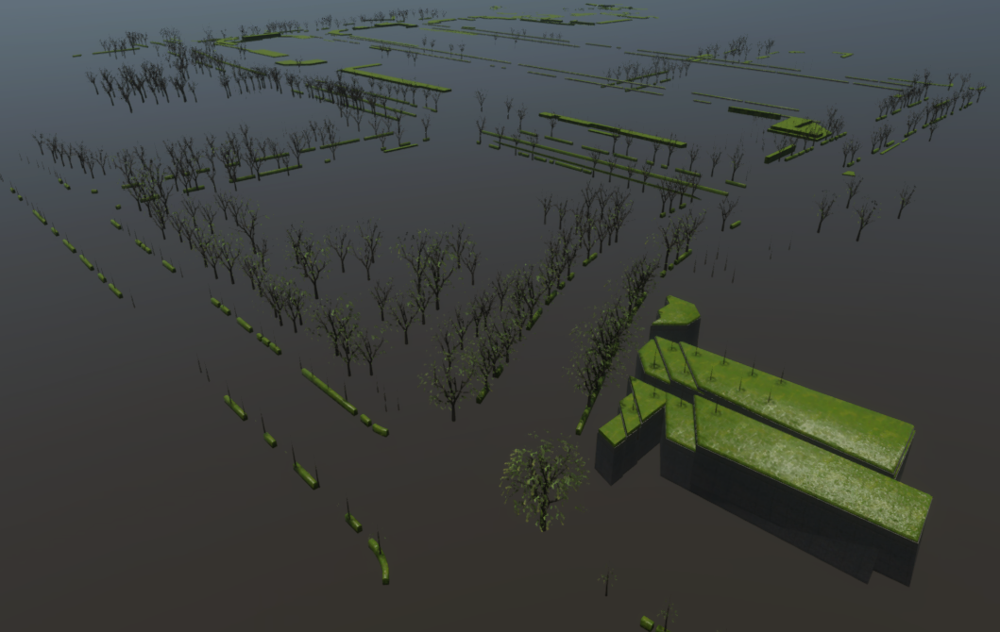
-
SJK01_P06- contains all buildings added to the environment. Objects of this category also have aMeshCollideradded, but their layer isDefault.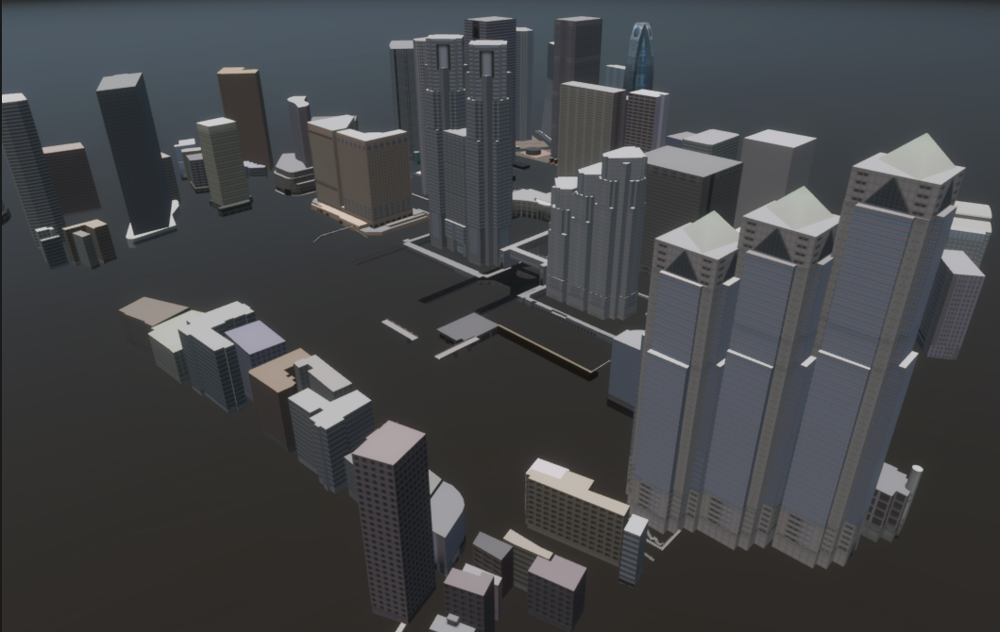
Scene Manager
For models (visual elements) added to the prefab to work properly with the LidarSensor sensor using RGL, make sure that the SceneManager component is added to the scene - more about it is described in this section.
In the scene containing Nishishinjuku RandomTrafficprefab Scene Manager (script) is added as a component to the AutowareSimulation object containing the Environment.
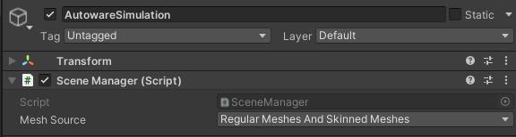
TrafficLights
TrafficLights are a stationary visual element belonging to the SJK01_P03 group.
The lights are divided into two types, the classic TrafficLights used by vehicles at intersections and the PedestrianLights found at crosswalks.
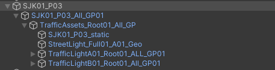
Classic traffic lights are aggregated at object TrafficLightA01_Root01_ALL_GP01
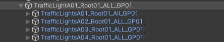
while lights used by pedestrians are aggregated at object TrafficLightB01_Root01_All_GP01.
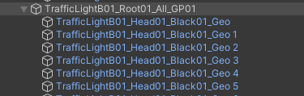
TrafficLights and PedestrianLights are developed using models available in the form of *.fbx files, which can be found under the following path:
Assets/AWSIM/Externals/Nishishinjuku/Nishishinjuku_opimized/Models/TrafficLights/Models/*
Classic TrafficLights
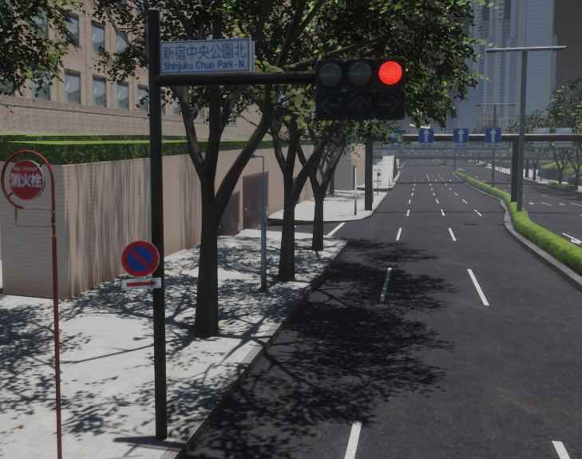
TrafficLights lights, outside their housing, always contain 3 signaling light sources of different colors - from left to right: green, yellow, red.
Optionally, they can have additional sources of signaling the ability to drive in a specific direction in the form of one or three signaling arrows.
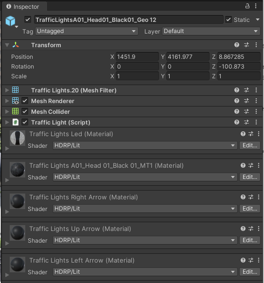
In the environment there are many classic lights with different signaling configurations. However, each contains:
- Transform - defines the position of the lights in the environment relative to the main parent of the group (
SJK01_P03). - Mesh Filter - contains a reference to the
Meshof the object. - Mesh Renderer - enables the rendering of
Mesh, including its geometry, textures, and materials, giving it a visual appearance in the scene. - Mesh Collider - allows an object to have collision detection based on
Mesh. - Traffic Light (script) - provides an interface to control signaling by changing the emission of materials. This script is used for simulated traffic, so it is described.
Materials
An important element that is configured in the TrafficLights object are the materials in the Mesh Renderer component.
Material with index 0 always applies to the housing of the lights.
Subsequent elements 1-6 correspond to successive slots of light sources (round luminous objects) - starting from the upper left corner of the object in the right direction, to the bottom and back to the left corner.
These indexes are used in script Traffic Light (script) - described here.
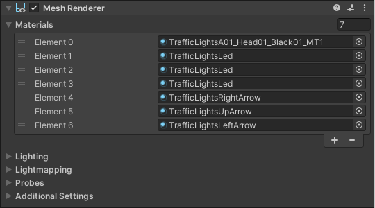
Materials for lighting slots that are assigned in Mesh Renderer can be found in the following path:
Assets/AWSIM/Externals/Nishishinjuku/Nishishinjuku_opimized/Models/TrafficLights/Materials/*
PedestrianLights
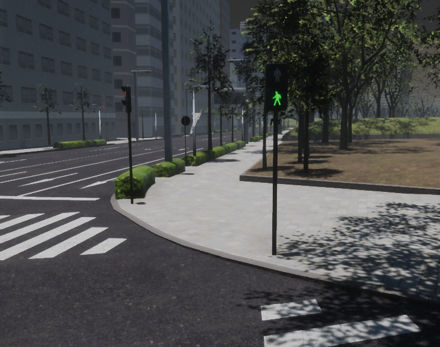
PedestrianLights lights, outside their housing, always contain 2 signaling light sources of different colors - red on top and green on the bottom.
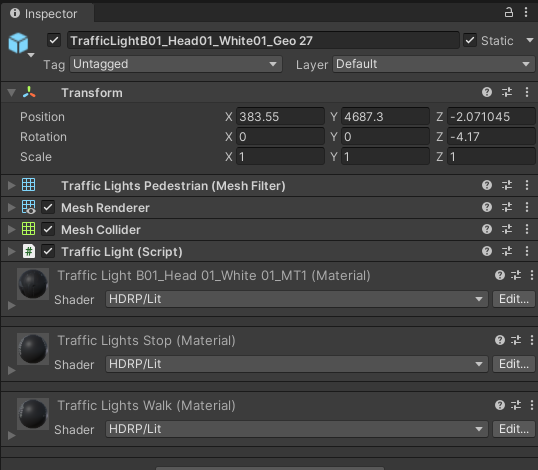
In the environment there are many pedestrian lights - they have the same components as classic TrafficLights, but the main difference is the configuration of their materials.
Materials
An important element that is configured in the PedestrianLights object are the materials in the Mesh Renderer component.
Material with index 0 always applies to the housing of the lights.
Subsequent elements 1-2 correspond to successive slots of light sources (round luminous objects) - starting from top to bottom.
These indexes are used in script Traffic Light (script) - described here.
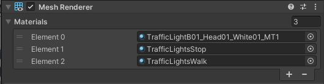
Materials for lighting slots that are assigned in Mesh Renderer can be found in the following path:
Assets/AWSIM/Externals/Nishishinjuku/Nishishinjuku_opimized/Models/TrafficLights/Materials/*
Volume
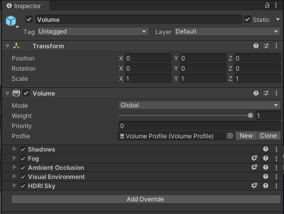
Volume is GameObject with Volume component which is used in the High Definition Render Pipeline (HDRP).
It defines a set of scene settings and properties.
It can be either global, affecting the entire scene, or local, influencing specific areas within the scene.
Volumes are used to interpolate between different property values based on the Camera's position, allowing for dynamic changes to environment settings such as fog color, density, and other visual effects.
In case of prefab Nishishinjuku RandomTraffic volume works in global mode and has loaded Volume profile.
This volume profile has a structure that overrides the default properties of Volume related to the following components: Fog, Shadows, Ambient Occlusion, Visual Environment, HDRI Sky.
It can be found in the following path:
Assets/AWSIM/Prefabs/Environments/Nishishinjuku/Volume Profile.asset
Directional Light
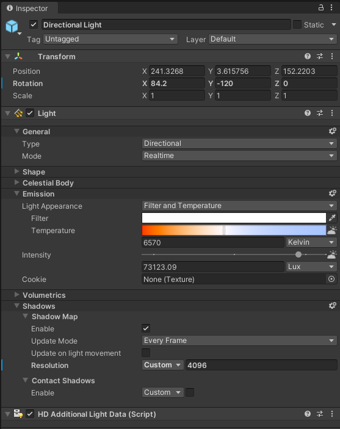
Directional Light is GameObject with Light component which is used in the High Definition Render Pipeline (HDRP).
It controls the shape, color, and intensity of the light.
It also controls whether or not the light casts shadows in scene, as well as more advanced settings.
In case of prefab Nishishinjuku RandomTraffic a Directional type light is added.
It creates effects that are similar to sunlight in scene.
This light illuminates all GameObjects in the scene as if the light rays are parallel and always from the same direction.
Directional light disregards the distance between the Light itself and the target, so the light does not diminish with distance.
The strength of the Light (Intensity) is set to 73123.09 Lux.
In addition, a Shadow Map with a resolution of 4096 is enabled, which is updated in Every Frame of the simulation.
The transform of the Directional Light object is set in such a way that it shines on the environment almost vertically from above.
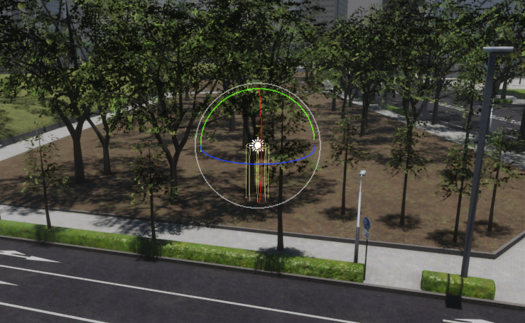
NPCPedestrians
NPCPedestrians is an aggregating object for NPCPedestrian objects placed in the environment.
Prefab Nishishinjuku RandomTraffic has 7 NPCPedestrian (humanElegant) prefabs defined in selected places.
More about this NPCPedestrian prefab you can read in this section.
Environment (script)
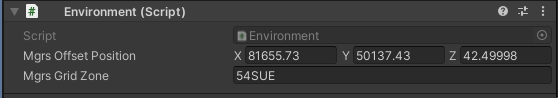
Environment (script) contains the information about how a simulated Environment is positioned in real world.
That means it describes what is the real world position of a simulated Environment.
AWSIM uses part of a Military Grid Reference System (MGRS).
To understand this topic, you only need to know, that using MGRS you can specify distinct parts of the globe with different accuracy.
For AWSIM the chosen accuracy is a 100x100 km square.
Such a square is identified with a unique code like 54SUE (for more information on Grid Zone please see this page).
Inside this Grid Zone the exact location is specified with the offset calculated from the bottom-left corner of the Grid Zone.
You can interpret the Grid Zone as a local coordinate system in which you position the Environment.
In the Nishishinjuku RandomTraffic prefab, the simulated Environment is positioned in the Grid Zone 54SUE.
The offset if equal to 81655.73 meters in the Ox axis, 50137.43 meters in the Oy axis and 42.49998 meters in the Oz axis.
In addition to this shift, it is also necessary to rotate the Environment in the scene by 90 degrees about the Oy axis - this is ensured by the transform in the prefab object.
This means that the 3D models were created in reference to this exact point and because of that the 3D models of Environment align perfectly with the data from Lanelet2.
The essence of Environment (script)
The Environment (script) configuration is necessary at the moment of loading data from Lanelet2.
Internally it shifts the elements from Lanelet2 by the given offset so that they align with the Environment that is located at the local origin with no offset.